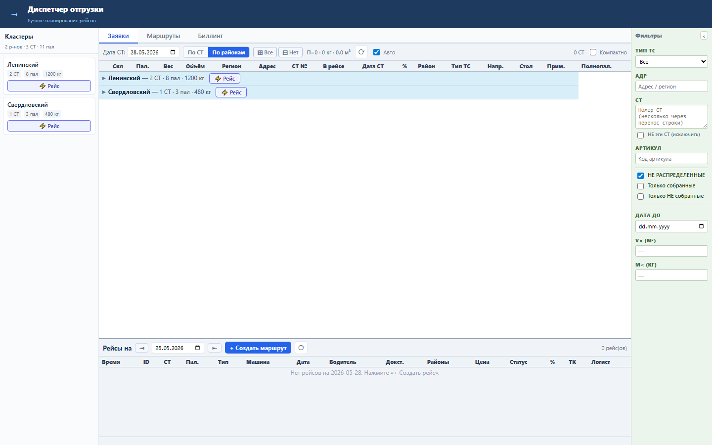
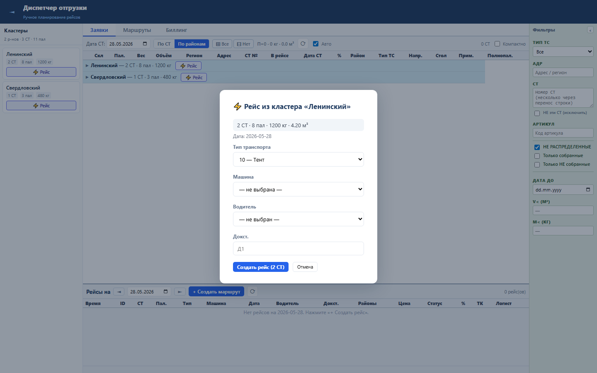
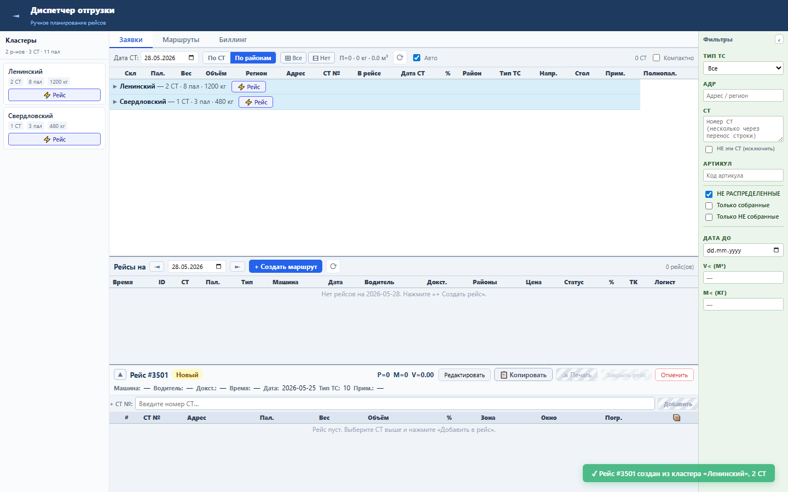

Блок ускоряет создание рейса из района: API больше не тянет все свободные СТ, а передаёт район сразу в SQL.
GET /available-sts принимает raion. Обычный район превращается в A.RAION = :raion, а (без района) — в A.RAION IS NULL.
Кнопка «Рейс» в карточке района создаёт рейс только из СТ выбранного района и делает меньше работы в Oracle/API.



Проверка: functional, UI smoke и безопасный load gate пройдены.